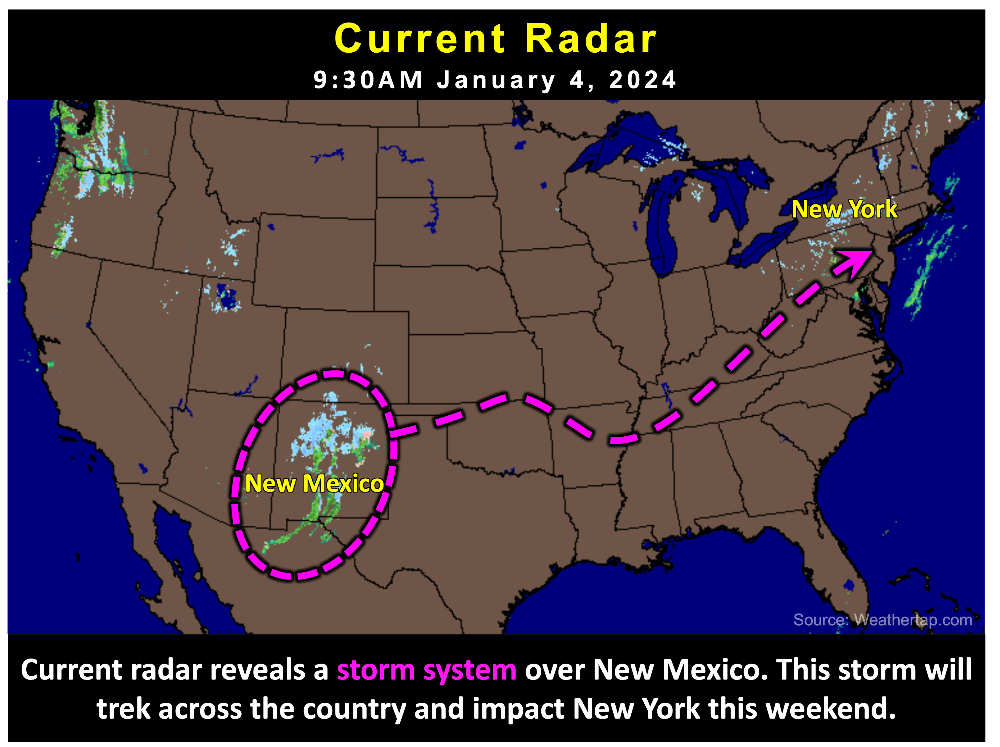

Heavy Snow Tonight
School Forecast
for Monday January 8th
Last updated: 10:30AM Saturday January 6, 2024
| 0% (Nope) |
|---|
| 0% (Nope) |
|---|
| 0% (Nope) |
|---|
___________________
10:30AM Saturday Update
Our first storm of the season will begin in a few hours. Expect snow to begin falling between 4PM and 7PM across Ulster County.
Heavy snow is expected between 7PM and about 3AM. 5 to 8 inches of snow is likely during this time. There may be somewhat of a lull after this main
burst of snow moves through. However, snow will likely redevelop after sunrise with light snow possible through 7PM. Total snow accumulations
of 5 to 10 inches.
Travel is not recommended tonight after 7PM. Driving is expected to become dangerous and potentially impossible due to high snowfall rates between 7PM and 3AM.
Snow impacted roads will still be hazardous throughout the day on Sunday, but lighter snowfall rates during the day will allow plowed roads to be passable by some vehicles.
Unless there are major development, this will be the only update until Sunday night. Tomorrow's update will focus on our next storm that will bring rain and potential
flooding on Tuesday. Stay safe, everyone!
___________________
7:30AM Friday Update
Quick morning post with updates:
Overall, impactful snowfall that we have been tracking since last Saturday remains on track for this weekend. Main change since yesterday has been to adjust the storm timings.
New data suggests a start time a couple hours earlier than previously forecasted. Snow may now start as early as 4PM in the Kingston
area. Snow will fall quite heavily after it begins. Roads will deteriorate quickly Saturday evening. There
could be an inch or two of snow on the ground by 7PM. Confidence has increased that most of the snow with this storm will fall in heavy snow bands Saturday night.
Expecting 5 to 8 inches by sunrise Sunday. After sunrise, the chances for snow will decrease significantly. After 7AM, there will be a chance for
light snow. Additional snow accumulations of up to 2 inches will be possible throughout the day on Sunday.
___________________
11:00AM Thursday Update
We're still about two and a half days out from the start of this weekend's snow storm, but everything continues to remain on track. Over the past 24 hours, confidence in an impactful storm has increased. Accumulating snow is likey to result in moderate to significant impacts Saturday night through Sunday.

The forecast:
Snow is expected to begin around 7PM Saturday. Steady snow saturday night may fall at moderate to heavy intensity. Several inches
of snow on the ground by Sunday morning. Steady snow -slight chance of sleet- throughout the day on Sunday, ending by 7PM.
The remaining uncertainty:
It is becoming more likely that the storm will develop bands of potentially heavy snow Saturday night. These bands will contribute to
higher snowfall totals in the areas that they pass over, but the exact path that these bands still remains uncertain. Trends over
the past 24 hours have shown an increased probability of Kingston and Ulster County being impacted by these snow bands Saturday night.
This is contributing to the increased confidence in heavy snow. That being said, the current "likely range" of 4 to 11 inches reflects
this uncertainty. Currently there is a 75% chance of more than 4 inches of snow, a 25% chance of more than 11 inches of snow.
There is a 50/50 chance of 8 inches of snow.

The impacts:
Moderate to significant snow impacts are expected this weekend. Roads will begin to deteriorate after 7PM Saturday. Travel Saturday night
will be hazardous due to slick, snow-covered roads as well as potentially reduced visibility due to potentially heavy snowfall. Several inches
of snow on the ground by sunrise Sunday will result in the need for plows and shovels. Continued steady snow during the day on Sunday will
result in snow slick to snow covered roads throughout the day. After snow ends by 7PM Sunday, slick roads will continue into Sunday night as
storm clean up continues. School impacts will be possible Monday moring, depending on how much snow falls the day before.
Next Update:
On Friday
-Ethan

KingstonSnows | Kingston, New York
Website built by Ethan Burwell